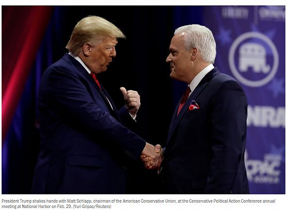
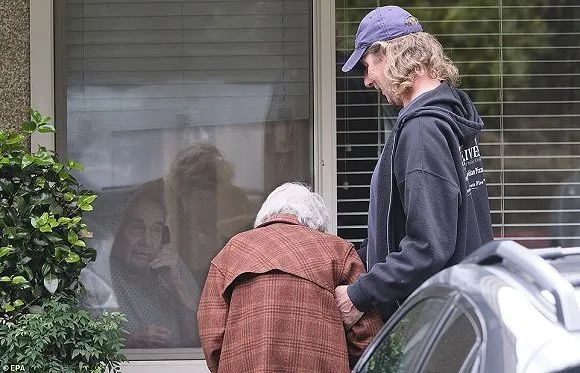

武汉中心医院又有医生殉职，韩国宣布进入战争状态，以及其他 25 条疫情新闻
原文链接 备份链接 根据丁香医生实时数据，截至 3 月 3 日 21:32 时，全国现存确诊病例 29930 例，累计确诊病例 80303 例，现存疑似病例 587 例。其中，重症病例 6806 例，死亡病例 2948 例， …
2月29日，特朗普在保守派政治行动会议上。来源：特朗普推特
记者：刘芳
“
“最害怕的还是（在疫情过后）我人没怎么样但是课却没过。”
”
不断扩散的新冠肺炎疫情给美国东西海岸人口稠密地区持续带来压力，就连总统特朗普也因参加马里兰州的保守派政治行动会议 (CPAC) 而被推到了聚光灯前。
据疾控中心（CDC）3月8日最新数据显示，美国共确诊新冠肺炎病例565人，死亡22人。有8个州宣布进入紧急状态，其中3个州的感染人数均超过了100人。
最令人担忧的是，曾在上述会议上和特朗普握手的美国保守派联盟 (ACU) 主席施拉普 (Matt Schlapp) 确认自己曾和新冠肺炎确诊患者有过“非常短暂”的接触。
不过现年52岁的施拉普并不太担心自己的健康状况。他在接受电视采访时表示：“我感觉自己健壮得就像马儿一样。我的孩子们也是。”
2月26日至29日，CPAC在马里兰州的国家港湾举行，特朗普和副总统彭斯等多名共和党政要出席。3月7日ACU发表声明称，一名参会人员被确诊感染新冠肺炎，但并没有与特朗普或彭斯接触。
除了施拉普以外，共和党参议员克鲁兹（Ted Cruz）、戈萨（Paul Gosar）和至少三名国会工作人员也因接触了同一名患者开始进行隔离。克鲁兹和戈萨均表示，目前没有出现任何症状，隔离只是预防措施。

特朗普和施拉普握手。来源：路透社
在目前报告疫情的34个州和华盛顿特区中，位于西岸的华盛顿州是疫情的风暴最中心，至少确诊137人。
在柯克兰市某养老院（Life Care Center of Kirkland），有16名老人因感染新冠肺炎死亡，占全美死亡人数的72%。据悉，这间养老院一共有老人108名，工作人员180人。《纽约时报》称，目前有至少70名工作人员出现了新冠肺炎的类似症状而正在接受隔离。
2月29日，华盛顿州州长英斯利（Jay Inslee）宣布进入紧急状态。他表示，将动用政府一切必要资源来对抗新冠病毒爆发，如果需要会出动华盛顿州国民警卫队。

Life Care Center of Kirkland一名老人隔着窗户在看自己的丈夫。来源： people
排在全美感染人数第二位的是第一经济大州，加利福尼亚州。《华盛顿邮报》数据显示，加州至少有114人感染，超过1万人正在自我隔离。
当地时间3月4日，加州州长纽森（Gavin Newsom）宣布进入紧急状态，而载有2383名乘客和1100名船员的“至尊公主号”也于9日停靠在奥克兰港。届时，如何最大限度地减低社区传播风险将是考验纽森的一道难题。
据美联社报道，“至尊公主号”在靠港后将按联邦当局规定花3天时间安排乘客下船。最先下船的是有症状和需要医疗护理的人员，其余健康的美国乘客将被送至不同军事基地隔离14天。
除此之外，邮轮上来自54个国家的数百名外国乘客将从奥克兰国际机场乘坐包机返回。中国驻旧金山总领馆透露，“至尊公主”号有11名中国籍工作人员和9名来自大陆的中国公民。
给纽森带来考验的还不仅是“至尊公主号”。受疫情的影响，加州多所知名大学已经停止授课而进入线上模式。斯坦福大学东亚语言与文化研究博士生黄小谊向界面新闻透露，该大学医学院一名教职员工于3月6日确诊，另有两名学生正在进行隔离并等待筛查结果。
黄小谊表示，虽然确诊病例的出现的确让大家感受到紧张，但目前斯坦福大部分人没有佩戴口罩的习惯，自己也更担心学业是否能正常进行的问题：“最害怕的还是（在疫情过后）我人没怎么样但是课却没过。”
在美国东岸，金融中心纽约的情况不容乐观。到发稿为止，纽约州共确诊新冠肺炎患者106人，至少2773人接受隔离。3月7日，纽约州州长科莫（Andrew M. Cuomo）宣布全州进入紧急状态。
对科莫来说，试剂盒短缺是新冠肺炎患者不能及时确诊的最大障碍。3月8日，他走访了纽约市长岛的一个实验室(Northwell Health Labs）。科莫表示，如果获得联邦政府的批准的话，该州的七个实验室便可以立即开始检测新冠肺炎。
“CDC竟然没有给这个实验室进行授权，这也太离谱和荒谬了”，科莫说，“请醒一醒，让各州私人实验室进行检测，我们需要尽快提高检测能力来辨识出新冠肺炎呈阳性的患者。不使用这个实验室，或其他私人实验室完全没有道理。”

纽约州州长科莫在3月8日的新闻发布会上。来源：《纽约时报》
出于对新冠肺炎疫情的担忧，美标准普尔500指数期货在3月9日下跌约5%，盘中一度触发熔断交易。同时下跌的还有道琼斯指数期货，跌幅约为4.9%；纳斯达克综合指数期货下跌4.8%。
不仅如此，美国10年期国债收益率已跌破0.5%，30年期国债收益率跌破1%。彭博新闻社表示，这是美国国债收益率曲线有史以来首次跌破这一水平。
鉴于疫情的不断升级，美国国立卫生研究院 (NIH) 国家过敏和传染病研究所所长福西 (Anthony S. Fauci) 周日表示，美国不排除实施类似意大利一样更为严格的防疫措施。
“你不想让人们惊慌，但你也看到，疫情的蔓延让一切变得可能，”福西说，“这就是为什么我们必须准备好采取一切适当的行动来控制和缓解疫情的原因。”
未经授权 禁止转载

原文链接 备份链接 根据丁香医生实时数据，截至 3 月 3 日 21:32 时，全国现存确诊病例 29930 例，累计确诊病例 80303 例，现存疑似病例 587 例。其中，重症病例 6806 例，死亡病例 2948 例， …
原文链接 备份链接 根据当地时间3月8日18时意大利卫生部公布的最新数据，意大利现有新冠病毒患者6387例，死亡366例，治愈622例，累计确诊感染新冠病毒总人数为7375例，较3月7日18时新增1492例，新增133例死亡病例。 据外 …
原文链接 备份链接 文 |《财经》特派记者 金焱 发自华盛顿 编辑 | 苏琦 2020年3月6日，我打算给自己放一天的假。 算起来自从武汉疫情暴发，我在1月21采写了第一篇文章《美确诊首例新型病毒病例，或成全球性公共卫生危机事件信号》 …
原文链接 备份链接 2月29日，特朗普出席“保守派政治行动大会”。图片来源：CPAC/Twitter 记者 | 潘金花 “ “我一点都不担心。”美国总统特朗普告诉记者，自己不会因为新冠肺炎疫情而取消政治集会。要 ” “我一点都不担心。” …
原文链接 备份链接 随着新冠肺炎疫情在全球范围内扩散，“口罩荒”现象明显增多，不少国家开始禁止口罩出口。 全球多地口罩告急 韩国买口罩实行单双号 随着新冠肺炎疫情加剧，韩国市场上“口罩荒”日益严重。韩国将实施口罩限购措施：按照出生年份的奇 …